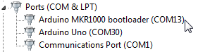
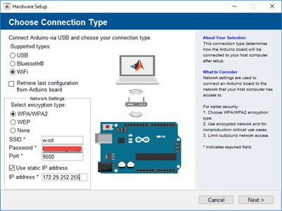
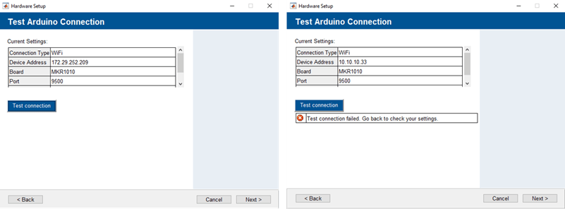
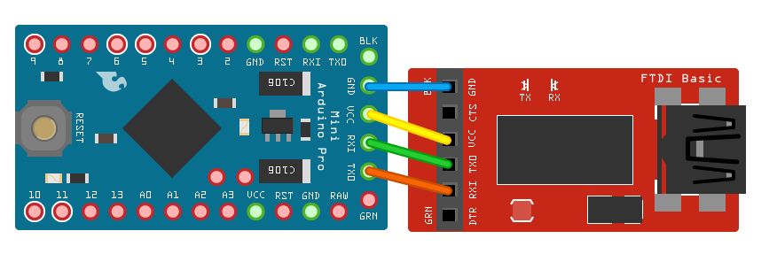

Board Specific Issues
Arduino ATmega328p Boards Does Not Work on Mac 10.9
On systems running on Mac 10.9, the built-in FTDI driver can be problematic. To fix the problem:
Type these commands into the terminal:
cd /System/Library/Extensions/IOUSBFamily.kext/Contents/PlugIns sudo mv AppleUSBFTDI.kext AppleUSBFTDI.disabledjobdsavjlo'pfbvdajpo' sudo touch /System/Library/Extensions
Restart your computer.
Install the original FTDI Virtual Com Port drivers.
Arduino Due
SPI Pins on Arduino Due Not Functioning Correctly
To use SPI pins on an Arduino® Due board, configure the board as follows:
Use SPI header, not the ICSP header on the Due.
Wire the CS pin to one of three pins on the Due, [4, 10, 52].
When using an EEPROM, add decoupling capacitor, 1 uF, between Vcc and Gnd as close to SPI EEPROM as possible.
When using an EEPROM, connect /WP to Vcc through a 22K pull-up resistor.
When using an EEPROM, wire Vcc to /HOLD.
Read/Write to Servo on Arduino Due Incorrect
readPosition on servo object might not give back the value
you write to it using writePosition when you use an
Arduino Due. The value could be off by 1.
Error creating I2C device object from the output of scanI2Cbus() function on Bus 1 of Arduino Due
Creating an I2C device object using the addresses received from the scanI2CBus function on Bus 1
of the Arduino Due board errors out. This is because, Arduino Due does not have internal pull-up resistors. Connect the pull-up
resistors to be able to create the device object.
SPIMode 3 of Arduino Due works sporadically.
On the Arduino Due, when you set the SPI Mode in Mode 3, the first write works sporadically. See this link for more details.
Serial pins configured as digital pins cannot be used as serial peripherals
Serial pins configured as DigitalInput or
DigitalOutput using configurePin, cannot be used
as serial peripherals. To resolve this issue, clear the existing arduino and recreate the arduino and serial device object.
Limited I2C write size on Arduino Due
You cannot write more than 32 bytes of data to I2C EEPROM
attached to an Arduino Due board in a single transmission.
Arduino Leonardo and Micro
Cannot see Leonardo board port
If you are using an Arduino Leonardo device on a Windows® machine, and the board was left in a bad state during upload, the COM port may briefly show up in the Device Manager and then quickly disappear.
To use Arduino IDE to see the COM port again:
Download and install the latest version of the Arduino IDE here.
Open the installed Arduino IDE.
Installed folder location of Arduino IDE:
C:\Program Files (x86)\ArduinoReconnect the board, or press the reset button to make the serial COM port appear again.
With the port still visible in Device Manager, select the port in Arduino IDE, and select
Leonardoas the Board type.Press and holding the
resetbutton on the board while clickingUploadin Arduino IDE. When IDE displays the 'Uploading...' message, release the reset button and make sure that the upload was successful.
Once reset, the Leonardo serial port appears correctly on Windows.
Arduino Nano 33 IoT
D0 and D1 pins are reversed
The serial pins D0 and D1 are reversed on the Arduino Nano 33 IoT board. D0 pin corresponds to TX and the D1 pin corresponds to RX. Ensure you use the correct pins.
Arduino Nano 33 BLE and Nano 33 BLE Sense
Arduino object creation fails
If the arduinoio.CLIRoot has a path length more than
50 characters , arduino object creation fails.
Ensure that the path length is less than 50
characters.
Arduino MKR CAN Shield
CAN-H and CAN-L pins are marked incorrectly
The markings for CAN-H and CAN-L may be
swapped on the silkscreen on an Arduino MKR CAN SHIELD board. Use the schematic of the board to identify
the correct pins.
Arduino Uno and Mega
Incorrect readVoltage results
On Arduino Uno and Mega boards, readVoltage gives
incorrect values when the AnalogReferenceMode is
internal, the AnalogReference value is
1.1V, and an external reference voltage is connected to the AREF pin through a
5K resistor. See this link
for more details.
Limited I2C EEPROM write size
You cannot write more than 32 bytes of data to I2C EEPROM
attached to an Arduino Uno or Mega boards in a single transmission.
Arduino Uno R4 WiFi and Minima
Connecting Multiple Arduino Uno R4 Minima boards throws error
Avoid connecting multiple Arduino Uno R4 Minima boards to a single computer. You might encounter a dfu-util error. For more details, see dfu-util error.
Error using USB hub
If you are connecting Arduino Uno R4 WiFi and Minima boards over a USB hub, the serial port of the Arduino board may not be available in MATLAB®.
Bad CPU type error
If you are encountering Bad CPU type error while using
Arduino Uno R4 WiFi and Minima boards on macOS with an Apple Silicon
processor, follow the troubleshooting steps mentioned in Error "bad CPU type in executable" on macOS.
Arduino MKR1000 or MKR1010
Bootloader Mode
If you are using an Arduino MKR1000 or MKR1010 boards, the board may occasionally get stuck in bootloader mode, which shows up in the Windows Device Manager.

To retrieve the MKR1000 board from bootloader mode:
Open Arduino IDE from the installed location. Installed folder location of Arduino IDE:
C:\Program Files (x86)\Arduino.Select the port in Arduino IDE, and select
Arduino/Genuino MKR1000as the board type.Press and hold the
resetbutton on the board while clickingUploadin Arduino IDE. When IDE displays the 'Uploading...' message, release the reset button, and make sure that the upload was successful.
Alternatively, you can unplug the board and plug it in again, or press the
reset button on the board.
Once reset, the Arduino MKR1000 successfully comes out of bootloader mode. Follow the same steps for the Arduino MKR1010board as well.
Arduino MKR1010 programmed as MKR1000
If you program the Arduino MKR1010 board accidentally as the MKR1000, you need to reconfigure it.
To reconfigure the board:
Open Arduino IDE from the installed location. Installed folder location of Arduino IDE:
C:\Program Files (x86)\Arduino.Select the port in Arduino IDE, and select
Arduino WiFi MKR1010as the board type.Upload an Example Sketch.
Arduino MKR1010 Static IP doesn't work with default firmware
From the Hardware Setup window for Arduino boards, you must be able to specify an IP address over which the Arduino connection is made. To do this, check Use static IP address and input the IP address as shown below.

Issue: The connection is made at a different ‘Device Address’ than mentioned or sometimes a “Test connection failed” error message is received.

Solution: Update MKR Wi-Fi® 1010 board to Wi-Fi NINA firmware version 1.2.0 or higher
Follow the steps to update firmware:
Download the ‘WiFi101-Updater-ArduinoIDE-Plugin-0.10.7.zip’ from this link and extract the file.
Open the folder location of your Arduino IDE. Installed folder location:
C:\Program Files (x86)\Arduino.Navigate inside the folder titled tools.
In this location, copy and paste the WiFi101 folder from the extracted zip file (Step 1) to replace existing folder.
Example folder location:
C:\Program Files (x86)\Arduino\tools\WiFi101.Go back to the location of your Arduino IDE and open the Arduino application.
Go to Tools > Board and Tools > Portto confirm the board and port number matches that of your MKR Wi-Fi 1010 board.
Go to File > Examples > WiFiNINA > Tools > FirmwareUpdater
Upload this sketch to your Arduino MKR Wi-Fi 1010
After you get the Done Uploading message, click on Tools > WiFi101/WiFiNINA Firmware Updater.
Select the port that matches your MKR Wi-Fi 1010 board and confirm that the firmware pre-selected is NINA firmware (1.2.0 or higher) and then click Update Firmware
You should get The firmware has been updated! confirmation message.
Close Arduino IDE; go to MATLAB and try setting your Static IP address.
Boards Not Listed in Interactive Hardware Setup
The following boards, though supported, are not listed in the interactive hardware setup screen for the support package installed on macOS 10.15 Catalina:
Arduino Nano 3.1
Arduino Pro Mini
Sparkfun Red Board Uno
Sparkfun Digital Sandbox
To resolve this issue, specify the port and board while creating an arduino object.
Arduino to FTDI Adaptor Connection
To align the TX and RX pins correctly, as shown in the diagram, connect the TX on the FTDI device to RX on the Arduino board and RX on the FTDI device to TX on the Arduino board. If these are misaligned, the FTDI can go undiscovered.
